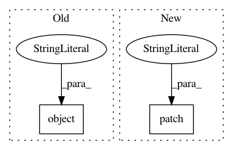

5a60ab34a4cecfe0b9636f6df77c087faa8b6959,tests/tracking/test_fluent.py,,test_search_runs_attributes,#,359
Before Change
def test_search_runs_attributes():
runs = [create_run(status=RunStatus.FINISHED, a_uri="dbfs:/test", run_id="abc", exp_id="123"),
create_run(status=RunStatus.SCHEDULED, a_uri="dbfs:/test2", run_id="def", exp_id="321")]
with mock.patch.object(MlflowClient, "search_runs", return_value=runs):
pdf = search_runs()
data = {"status": [RunStatus.FINISHED, RunStatus.SCHEDULED],
"artifact_uri": ["dbfs:/test", "dbfs:/test2"],
After Change
def test_search_runs_attributes():
runs = [create_run(status=RunStatus.FINISHED, a_uri="dbfs:/test", run_id="abc", exp_id="123"),
create_run(status=RunStatus.SCHEDULED, a_uri="dbfs:/test2", run_id="def", exp_id="321")]
with mock.patch("mlflow.tracking.fluent._get_paginated_runs", return_value=runs):
pdf = search_runs()
data = {"status": [RunStatus.FINISHED, RunStatus.SCHEDULED],
"artifact_uri": ["dbfs:/test", "dbfs:/test2"],
In pattern: SUPERPATTERN
Frequency: 3
Non-data size: 2
Instances
Project Name: mlflow/mlflow
Commit Name: 5a60ab34a4cecfe0b9636f6df77c087faa8b6959
Time: 2019-07-08
Author: 51378244+max-allen-db@users.noreply.github.com
File Name: tests/tracking/test_fluent.py
Class Name:
Method Name: test_search_runs_attributes
Project Name: mlflow/mlflow
Commit Name: 5a60ab34a4cecfe0b9636f6df77c087faa8b6959
Time: 2019-07-08
Author: 51378244+max-allen-db@users.noreply.github.com
File Name: tests/tracking/test_fluent.py
Class Name:
Method Name: test_search_runs_data
Project Name: home-assistant/home-assistant
Commit Name: 272539105f949ac28e37adac0474ac28d65256e0
Time: 2016-10-17
Author: rob.capellini@gmail.com
File Name: tests/components/test_api.py
Class Name: TestAPI
Method Name: test_api_get_error_log